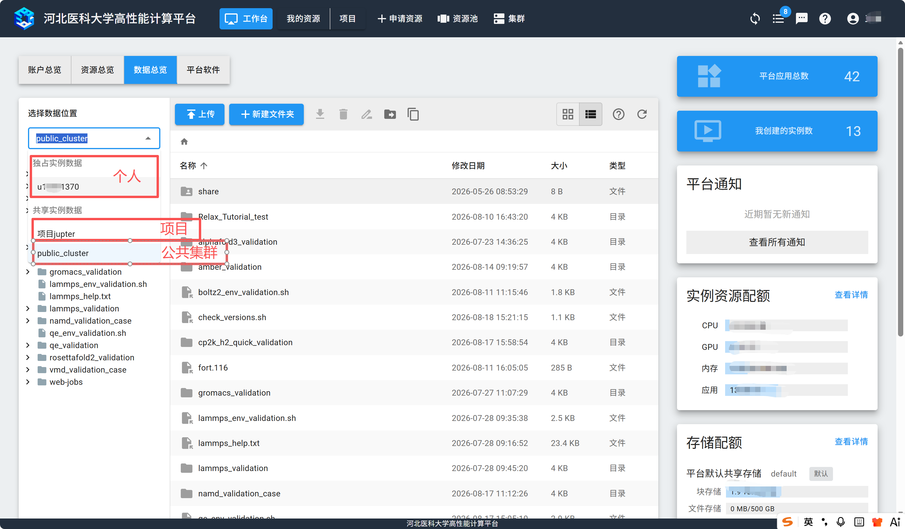
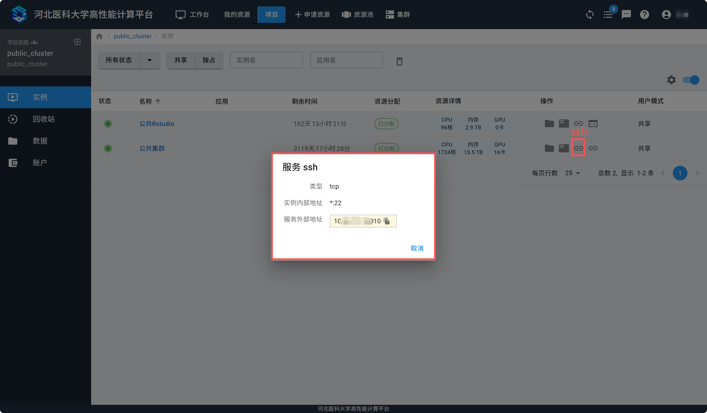
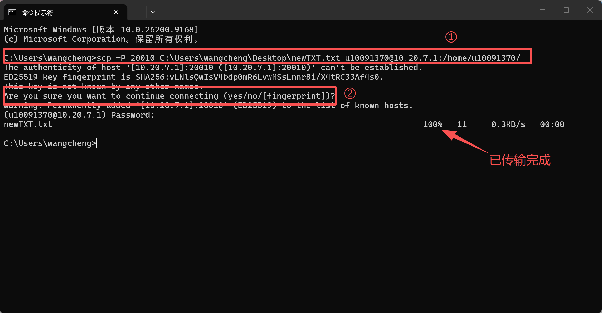
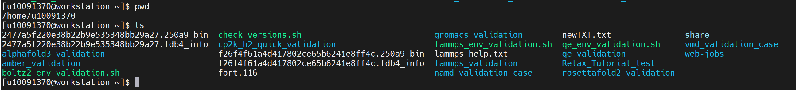
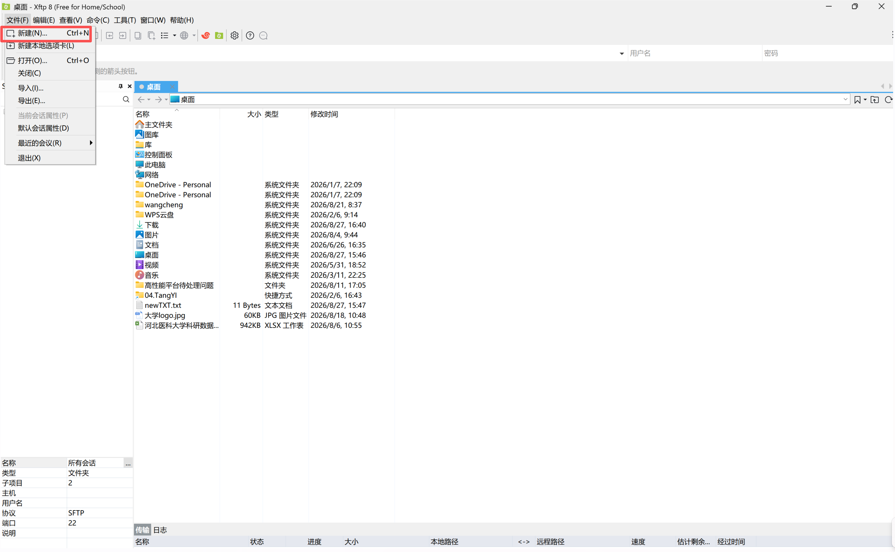
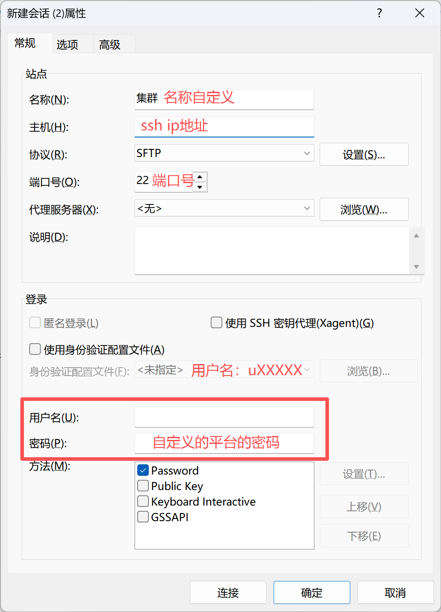
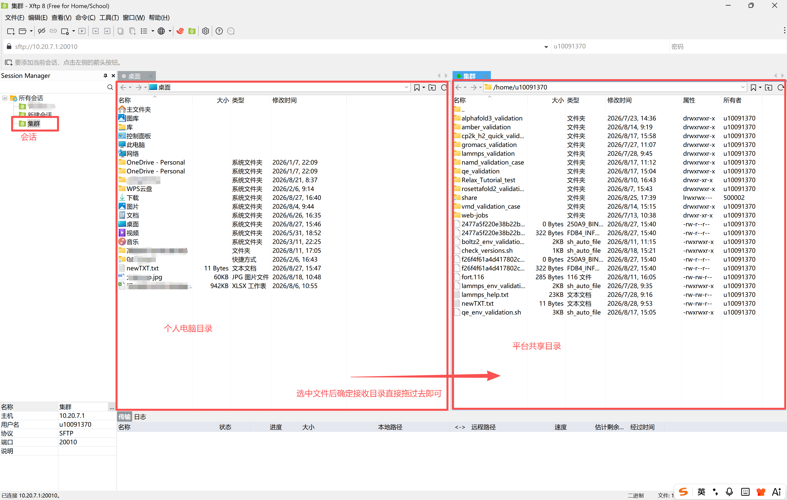
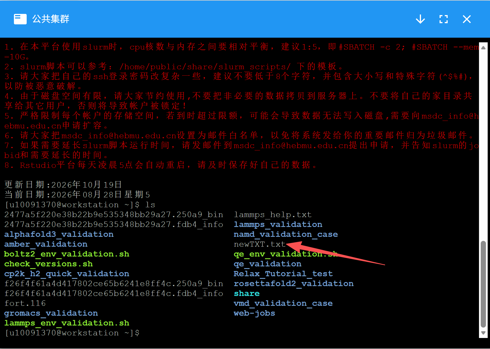

文件传输¶
用户数据存储空间¶
在平台上，系统根据不同用户模式会为用户在共享文件系统上分配三种目录，分别是个人目录，项目目录和公共集群目录。
在实例或集群中，这三种目录所对应的路径不同，具体见下表：
个人目录 |
项目目录 |
公共集群目录 |
|
|---|---|---|---|
容器实例 |
/home/<username> |
/eaas/default/groups/{group_name}/home/{user_name} |
/eaas/default/groups/public_cluster/home/<username> |
虚拟机实例 |
/webdav/Storage(default)/MyData |
/webdav/Storage(default)ProjectGroup(<project>) |
/webdav/ProjectGroup(public_cluster) |
公共集群 |
/users/<username> |
/groups/<project id>/home/<username> |
/home/<username> |
WEB页面 |
独占实例数据-<username> |
共享实例数据-<project显示名> |
共享实例数据-public_cluster |
提示
<username>请替换为自己的用户名（右上角“我的信息”-“基本信息”中查询）。
<project id>请替换为"g+项目ID"（项目基本信息中查询项目ID），例：项目ID为700008，则替换为“g700008”。
<project>请替换为项目名（项目基本信息中查询。）
提示
新建项目后，如果在实例 /groups 下没有显示该项目目录，重启下实例即可。
文件传输¶
Web页面数据传输¶
平台支持通过Web页面上传下载数据和管理文件。
提示
通过Web页面上传和下载文件有数量限制，每次最多上传10个文件，下载1个文件。
点击“工作台”-“数据总览”，选择相应的数据位置，点击上传或新建文件夹可对个人、项目和公共集群中的数据进行管理。


功能说明：
上传/新建文件夹：上传单个/多个文件/新建文件夹将文件上传至文件夹内
下载：将选中的数据下载到本地
删除：删除平台上的数据
重命名：修改文件/文件夹名称
移动：将当前目录内选中的文件移动至其他目录中
复制：将选中的数据复制到其他目录中
ssh账户传输文件¶
由于Web传输文件功能有限，对于开放了SSH端口的集群或实例，用户可以通过SSH账户使用scp类的工具来传输数据。
以公共集群项目为例，用户在公共集群的页面里，点击实例最右侧的SSH服务地址按钮，会弹出平台对外开放的IP地址和端口：


首次使用SSH登录的用户需要 重置平台密码。
用户在校内，能够直接访问平台服务IP地址的情况下，可以使用scp、WinSCP或Xmanager等scp工具来传输数据：
1 | |




使用XFTP传输¶
Windows用户也可以使用
XFTP 客户端进行传输。
下载并安装XFTP软件后打开，点击“文件”-“新建”。


名称用户可以自定义，主机选项中输入“服务ssh“显示的服务外部地址，端口号填写“服务ssh”中的端口号，协议使用默认的SFTP，用户名和密码填写平台的用户名和密码。点击”连接“。


连接后左侧为当前用户计算机的视图，右侧为远程计算机的视图，用户访问的远程计算机路径为 /home/username ，即当前用户的家目录，用户可将文件从个人电脑上传输到共享文件夹内，下方传输栏会显示传输任务详细信息。


传输完成后即可在公共集群或实例控制台的用户家目录中看到刚才传输的文件。

